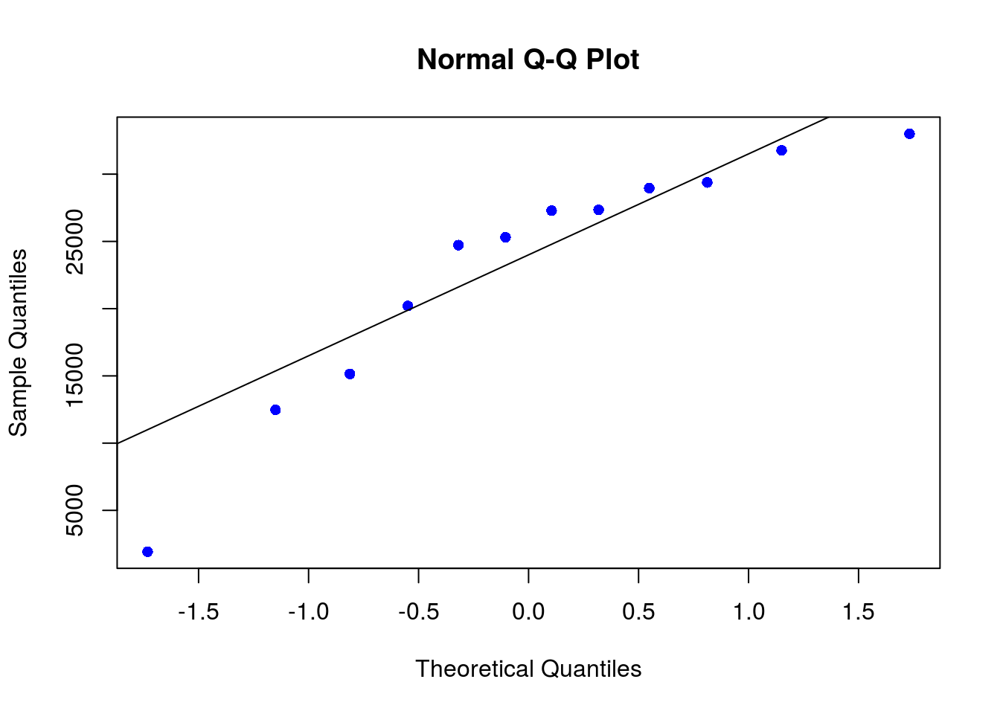

Estimación puntual y por intervalos
- Estimación puntual y por intervalos
- Estimación por intervalos
- Intervalos de confianza más precisos
- Intervalo de confianza para la media de una población
- Intervalo para \(\mu\) con \(\sigma^2\) conocida
- Intervalo para \(\mu\) con \(\sigma^2\) desconocida
- Distribución t-Student
- Valores de la distribución t-Student
- Intervalo t - Student
- Comentarios finales para el intervalo de \(\mu\) con \(\sigma\) desconocida.
- Intervalo de confianza para proporciones
- Intervalos de confianza con RStudio.
- Ejercicios de repaso
Estimación puntual y por intervalos
¿Qué es un estimador?
Cuando queremos realizar un estudio de una población cualquiera de la que desconocemos sus parámetros, debemos tomar una muestra aleatoria de dicha población a través de la cual se pueda calcular una aproximación a dichos parámetros que desconocemos y queremos estimar. Bien, pues esa aproximación se llama estimación. Además, junto a esa estimación, y dado a que es muy probablemente que no coincida con el valor real del parámetro, discutiremos el error aproximado que se comete al realizarla.
Estimación puntual
Una estimación puntual del valor de un parámetro poblacional desconocido (como puede ser la media \(\mu\) , o la desviación estándar \(\sigma\) ), es un número que se utiliza para aproximar el verdadero valor de dicho parámetro poblacional. A fin de realizar tal estimación, tomaremos una muestra aleatoria de la población y calcularemos el estadístico muestral asociado ( \(\bar{X}\) para la media, \(S\) para la desviación estándar, etc.). El valor de este parámetro muestral será la estimación puntual del parámetro poblacional.
Por ejemplo, supongamos que estamos interesados en estimar la edad media de los estudiantes subgraduados en el Colegio. Seleccionan una muestra de la edad 100 estudiantes y calculamos la media de esta muestra, este valor será un estimador puntual de la media de la población.
¿Qué propiedades debe cumplir todo buen estimador?
Insesgado: Un estimador es insesgado cuando la media de su distribución muestral asociada coincide con la media de la población. Esto ocurre, por ejemplo, tomando el estadístico \(\bar{X}\) como el estimador , ya que \(\mu_{\bar{x}}=\mu\).
Ejemplos estimación puntual
1. Queremos saber el porcentaje \(\pi\) de los estudiantes en el Colegio a quienes les gusta la comida en la cafetería. Vamos a considerar a \(p\) como el porcentaje para todos los estudiantes, es decir para toda la población, entonces \(p\) es un parámetro desconocido.
Para cada estudiante hay dos posibilidades: A él o ella le gusta la comida o no le gusta la comida, es decir {Sí o No}. Entonces, si seleccionamos al azar a un estudiante, él o ella es un ensayo de Bernoulli (Binomial con n=1). Si seleccionamos aleatoriamente n estudiantes, tenemos una muestra de n ensayos (Binomial(n,p)).
Entonces la forma de estimar el parámetro \(p\) es mediante \(\hat{p}\), donde
\[\hat{p}=\dfrac{X}{n}\]
Si hicimos un buen trabajo al seleccionar a los estudiantes para la muestra, entonces esperamos que la muestra signifique que \(\hat{p}\) está muy cercano de la proporción poblacional.
2. Ejemplo
Todo lo que acabo de decir en el ejemplo anterior es esto: si le preguntamos a 500 personas si les gusta Coca-Cola y 300 dicen que sí, ¡su mejor estimación para la proporción de personas que les gusta Coca-Cola es 300/500. Entonces,
\[\hat{p}= \dfrac{300}{500}=0.6\].
Cada parámetro de la población tiene un estadístico correspondiente y viceversa. Veamos:
Media muestral (\(\bar{X}\)) : media poblacional (\(\mu\))
Proporción muestral (\(\hat{p}\)) : Proporción poblacional (\(p\))
Mediana muestral - Mediana poblacional
Desviación estándar muestral (\(S\)) - Desviación estándar poblacional (\(\sigma\))
1er cuartil (\(Q_1\)) - 1er cuartil poblacional.
etc …
El trabajo de calcular alguno de estos valores muestrales se denomina estimación puntual.
Ejercicios
1. Los siguientes datos corresponden a los tiempos de 8 viajes entre Mayagüez y Ponce.
## [1] 39 51 35 72 53 36 55 59Queremos estimar el tiempo promedio que tarda un viaje entre estas dos ciudades.
¿Cuál es el parámetro de interés en este caso?
¿Cuál es la estimación puntual para el parámetro de interés?
¿Estamos seguros que la estimación de \(\mu\) coincide de manera exacta con el valor poblacional?
Estimación por intervalos
En la vida real, una estimación puntual rara vez es suficiente, por lo general también necesitamos una estimación del error en nuestra estimación.
Por ejemplo, suponga que hicimos una encuesta a los estudiantes subgraduados en el Colegio. Para eso entrevistamos a 150 estudiantes seleccionados al azar, y encontramos un GPA promedio (muestra) de 2.85. Realmente queremos saber la (población) promedio de GPA de todos los estudiantes de pregrado en el Colegio.
Ahora, el “2.85” es el GPA promedio específico para la muestra que recolectamos, si repetimos todo el proceso y encontramos una muestra diferente, también obtendremos un promedio de muestra diferente. Digamos que la media (población) del GPA para todos los estudiantes de pregrado es \(\mu_{gpa}\). Está bastante claro que \(\mu_{gpa} \neq 2.53\), pero con suerte \(\mu_{gpa}\) está cerca de 2.85. Pero, qué tan cerca?
Una forma de responder a estas preguntas es encontrar una estimación de intervalo en lugar de una estimación puntual. Específicamente, consideraremos un tipo de estimación de intervalo llamado intervalo de confianza.
¿Qué es un intervalo de confianza?
Un intervalo de confianza es un rango de valores, derivado de los estadísticos de la muestra, que posiblemente incluya el valor de un parámetro de población desconocido. Debido a su naturaleza aleatoria, es poco probable que dos muestras de una población en particular produzcan intervalos de confianza idénticos. Sin embargo, si usted repitiera muchas veces su muestra, un determinado porcentaje de los intervalos de confianza resultantes incluiría el parámetro de población desconocido.

En este caso, la línea negra horizontal representa el valor fijo de la media desconocida de la población, µ. Los intervalos de confianza azules verticales que se sobreponen a la línea horizontal contienen el valor de la media de la población. El intervalo de confianza rojo que está completamente por debajo de la línea horizontal no lo contiene. Un intervalo de confianza de 95% indica que 19 de 20 muestras (95%) de la misma población producirán intervalos de confianza que contendrán el parámetro de población.
El intervalo de confianza se determina calculando una estimación de punto y luego determinando su margen de error.
Margen de error
Cuando usted utiliza estadísticos para estimar un valor, es importante recordar que, sin importar lo bien que esté diseñado su estudio, su estimación está sujeta a error de muestreo aleatorio. El margen de error cuantificar este error e indica la precisión de la estimación.
Para un intervalo de confianza bilateral, el margen de error es la distancia desde el estadístico estimado hasta cada el valor del intervalo de confianza. Cuando un intervalo de confianza es simétrico, el margen de error es la mitad del ancho del intervalo de confianza.
Mientras mayor sea el margen de error, más ancho será el intervalo y menos seguro podrá estar usted del valor de la estimación de punto.
Finalmente el intervalo de confianza tiene la siguiente estructura:
Valor puntual \(\pm\) Valor crítico x error estándar
Si consideramos el intervalo para la media poblacional, entonces el intervalo construido tendrá una confianza específica de la estimación correcta del valor del parámetro poblacional \(\mu\). En otras palabras, existe una confianza especificada de que \(\mu\) se encuentre en algún lugar en el rango de números definidos dentro del intervalo.
En general, el nivel de confianza se simboliza con \((1 - \alpha).100 \%\), donde \(\alpha\) es la proporción de las colas de la distribución que están fuera del intervalo de confianza. La proporción de la cola superior e inferior de la distribución es \(\alpha/2\)
Intervalos de confianza más precisos
Si el intervalo de confianza es demasiado ancho, usted no puede estar muy seguro del valor real de un parámetro, como por ejemplo la media. Sin embargo, puede utilizar varias estrategias para reducir el ancho de un intervalo de confianza y hacer que la estimación sea más precisa. Las siguientes características afectan el ancho del intervalo de confianza.
* Tamaño de la muestra
* Variación en los datos
* Nivel de confianza
Aumentar el tamaño de la muestra
Por lo general, mientras más observaciones haya, más estrecho será el intervalo alrededor del estadístico de la muestra. Por lo tanto, se recomienda recolectar más datos para obtener una estimación más precisa de un parámetro de población.
Reducir la variabilidad
Mientras menos varíen los datos, más precisa será la estimación de un parámetro de población. Eso se debe a que al reducirse la variabilidad de los datos, disminuye la desviación estándar y, por ende, el margen de error de la estimación.
Reducir el nivel de confianza
La ventaja de un nivel de confianza más bajo es que se obtiene un intervalo de confianza más estrecho y más preciso. La desventaja es que se está menos seguro de que el intervalo de confianza contiene el parámetro de población de interés.
Intervalo de confianza para la media de una población
De una población de media \(\mu\) y desviación estándar \(\sigma\) se pueden tomar muestras de tamaño \(n\). Como vimos anteriormente cada una de estas muestras tiene a su vez una media y que la media de todas las medias muestrales coincide con la media poblacional: \(\mu_{\bar{x}}=\mu\).
Pero además, si el tamaño de las muestras es lo suficientemente grande, (\(n \geq 30\)) o la distribución poblacional es normal, la distribución de medias muestrales es, prácticamente, una distribución normal con media \(\mu\) y una desviación estándar dada por la siguiente expresión:
\[\sigma_{\bar{x}}=\dfrac{\sigma}{\sqrt{n}}\]
Entonces tenemos que la media muestral \(\bar{X}\) se comporta aproximadamente como una variable aleatoria normal con media igual a la media poblacional \(\mu\) y con desviación estándar \(\sigma\) igual a la desviación poblacional dividida por la raíz cuadrada del tamaño de la muestra, siempre que sea grande. Esto es:
\[\bar{X} \sim Normal(\mu,\frac{\sigma}{\sqrt{n}})\]
Estandarizando, donde \[Z = \dfrac{\bar{X}-\mu}{\dfrac{\sigma}{\sqrt{n}}}\]
tenemos:
\[Z \sim Normal(0,1)\]
En esta distribución normal de medias se puede calcular el intervalo de confianza donde se encontrará la media poblacional si solo se conoce una media muestral \(\bar{X}\), con un nivel de confianza determinado. Habitualmente se manejan valores de confianza del 95 %, 90 % y del 99 %. A estos valores de confianza se les nota por \(1-\alpha\) (debido a que \(\alpha\) es la probabilidad de que la media muestral no esté en el intervalo. Tener presente:
1. \((1-\alpha)*100 \%\) es el nivel de confianza o confiabilidad.
2. \(\alpha\) es el nivel de significancia.
Para construir el intervalo de confianza se necesita encontrar en valor crítico \(Z_{\alpha/2}\) que equivale a un percentil de la distribución normal estándar.

¿Cómo encontrar el valor crítico \(Z_{\alpha/2}\)?
Supongamos un nivel de confianza del 95 %, por tanto \(\alpha=0.05\), entonces ¿Cuanto es \(Z_{\alpha/2}\)?, para responder esto se pueden usar tablas estadísticas de la distribución normal estándar, pero esto no es muy atractivo en esta época. Podemos usar RStudio, veamos
Si, \(\alpha=0.5\), entonces \(\alpha/2=0.025\), esto quiere decir que:
\[P(Z< z_{\alpha/2})=0.025\]
Para saber el valor del percentil \(z_{\alpha/2}\) usamos la función qnorm(), como sigue para un 95 % de confianza.
qnorm(0.025,lower.tail = FALSE)## [1] 1.959964Y si \(\alpha=0.1\), entonces \(Z_{\alpha/2}\) es decir con un 90 % de confianza
qnorm(0.05,lower.tail = FALSE)## [1] 1.644854También, si \(\alpha=0.01\), entonces \(Z_{\alpha/2}\) es decir con un 99 % de confianza
qnorm(0.005,lower.tail = FALSE)## [1] 2.575829En resumen,
| Nivel de confianza | Nivel de significancia \(\alpha\) | Punto crítico \(Z_{\alpha/2}\) |
|---|---|---|
| 99 % | 0.01 | 2.575 |
| 95 % | 0.05 | 1.960 |
| 90 % | 0.1 | 1.645 |
Intervalo para \(\mu\) con \(\sigma^2\) conocida
Si conocemos la desviación estándar poblacional el intervalo de confianza para \(\mu\) está definido de la siguiente manera:
\[\bar{X} \pm Z_{\alpha/2}\dfrac{\sigma}{\sqrt{n}}\]
Donde,
Límite Inferior: \(\bar{X} - Z_{\alpha/2}\dfrac{\sigma}{\sqrt{n}}\)
Límite Superior: \(\bar{X} + Z_{\alpha/2}\dfrac{\sigma}{\sqrt{n}}\)
Por tanto, el intervalo para la media \(\mu\) es
\[\Big(\bar{X} - Z_{\alpha/2}\dfrac{\sigma}{\sqrt{n}} , \bar{X} + Z_{\alpha/2}\dfrac{\sigma}{\sqrt{n}}\Big)\]
SUPUESTOS:
El intervalo de confianza para \(\mu\) que obtuvimos anteriormente funciona bien si se cumplen los siguientes supuestos:
1. La varianza \(\sigma\) es conocida.
2. La muestra proviene de una distribución Normal de media \(\mu\) con desviación estándar \(\sigma\) conocida.
3. Los datos de la muestra \(X_1, X_2,...,X_n\) son independientes.
Ejemplos
1. Los siguientes datos corresponden a una muestra de la estatura de los estudiantes (en centímetros) en cierta universidad. Se sabe que la población es normal con varianza \(\sigma^2=7\).
159, 179, 164, 165, 165, 168, 171, 162, 169, 168, 179, 162, 174, 168, 168, 168, 167, 157, 171, 176, 179, 163, 170, 163, 171, 161, 177, 156, 158, 171, 162, 168, 170, 168, 172, 170, 171, 169, 165, 164, 156, 170, 163, 164, 179, 165, 149, 162, 167, 172
Estimar la media poblacional de la estatura en los estudiantes mediante estimación puntual
La estimación puntual mediante la media es:
estatura <- c(159, 179, 164, 165, 165, 168, 171, 162, 169, 168, 179, 162, 174, 168, 168, 168, 167, 157, 171, 176, 179, 163, 170, 163, 171, 161, 177, 156, 158, 171, 162, 168, 170, 168, 172, 170, 171, 169, 165, 164, 156, 170, 163, 164, 179, 165, 149, 162, 167, 172)
##Estimación puntual de la media
mean(estatura)## [1] 167.1Es decir que \(\bar{X}=167.1 cm\) es la estimación de la media poblacional.
Construya un intervalo de confianza para estimar la media poblacional de la estatura de los estudiantes. Con un nivel de confianza del 95 %.
Para este caso tenemos los siguientes datos:
\(n=50\)
\(\bar{X}=167.1\)
\(\sigma=\sqrt{7}=2.645\)
Necesitamos el valor crítico de la distribución normal estándar en \(Z_{\alpha/2}\)
qnorm(0.025,lower.tail = FALSE)## [1] 1.959964Es decir \(Z_{0.005}=1.960\), tomando el valor positivo.
Luego:
Límite Inferior: \(\bar{X} - Z_{\alpha/2}\dfrac{\sigma}{\sqrt{n}}=167.1 - 1.960*\dfrac{2.645}{\sqrt{50}}=166.36\)
Límite Superior: \(\bar{X} + Z_{\alpha/2}\dfrac{\sigma}{\sqrt{n}}=167.1 + 1.960*\dfrac{2.645}{\sqrt{50}}=167.83\)
Por lo tanto el intervalo de confianza del 95 % esta dado por
\[\Big(166.36, 167.83 \Big)cm \]
Conclusión: Podemos afirmar con una confiabilidad del 95 % que el promedio de la estatura en los estudiantes esta entre \(166.36\) y \(167.83\).
2. Una prestigiosa cadena de restaurantes está pensando en abrir una nueva franquicia. Para tomar la decisión se basan en las ventas promedio mensuales de 12 restaurantes activos en cierta ciudad que son de su propiedad. Ellos piensan que si dichas ventas en promedio son mayores a \(30,000\) al mes, entonces la decisión será viable. Se conoce que la desviación estándar poblacional es \(\sigma=\$9000\). Los datos son los siguientes:
28959, 33000, 29383, 20203, 15145, 31767, 27342, 12476, 24720, 25308, 1933, 27284
Use estimación puntual para estimar la media poblacional de las ventas. ¿Que le recomienda al dueño del restaurante?
ventas <- c(28959, 33000, 29383, 20203, 15145, 31767, 27342, 12476, 24720, 25308, 1933, 27284)
mean(ventas)## [1] 23126.67Tenemos que \(\bar{X}=\$23126.67\) es la estimación puntual del promedio mensual de ventas. Por lo tanto según la meta del dueño del restaurante no es recomendable que abra uno nuevo.
Construya un intervalo de confianza para estimar el promedio de ventas mensuales. ¿Es viable abrir un nuevo restaurante en la ciudad?. Use un nivel de confianza del 99 %.
Para este caso tenemos los siguientes datos:
\(n=12\)
\(\bar{X}=\$23126.67\)
\(\sigma=9000\)
Necesitamos el valor crítico de la distribución normal estándar en \(Z_{\alpha/2}\)
qnorm(0.005,lower.tail = FALSE)## [1] 2.575829Es decir \(Z_{0.005}=2.575\), tomando el valor positivo.
Luego:
Límite Inferior: \(\bar{X} - Z_{\alpha/2}\dfrac{\sigma}{\sqrt{n}}=23126.67 - 2.575*\dfrac{9000}{\sqrt{12}}=16436.62\)
Límite Superior: \(\bar{X} + Z_{\alpha/2}\dfrac{\sigma}{\sqrt{n}}=23126.67 + 2.575*\dfrac{9000}{\sqrt{12}}=29816.71\)
Por lo tanto el intervalo de confianza del 99 % esta dado por
\[\Big(16436.62, 29816.71 \Big)\$ \]
Conclusión: Podemos afirmar con una confiabilidad del 99 % que el promedio de ventas mensuales está entre \(\$16436.62\) y \(\$29816.71\).
También la apertura de un nuevo restaurante NO puede ser viable, dado a que la meta de $ 30000 mil propuesta por el dueño del restaurante NO está dentro del intervalo.
Intervalo para \(\mu\) con \(\sigma^2\) desconocida
Supongamos que la población es normal con media y varianza desconocida y que se desea hacer inferencias acerca de la población, con base en una muestra pequeña (n < 30) tomada de la población. En este caso la distribución de la media muestral ya no es normal, sino que sigue la distribución t de Student.
Distribución t-Student
La distribución \(t\) de Student es bastante similar a la Normal Estándar, con la diferencia que se aproxima más lentamente al eje horizontal. El parámetro de esta distribución es llamado grados de libertad, y se puede notar que a medida que los grados de libertad aumentan, la curva de la \(t\) y la curva normal estándar se asemejan cada vez más. Por cada estimación de parámetro, calculada en forma independiente, que aparece en la fórmula del estadístico se pierde un grado de libertad con respecto al total de datos tomados. Los grados de libertad se denotan por \(v\).
Valores de la distribución t-Student
Para calcular un valor específico de la distribución t-Student necesitamos el número de grados de libertad y el valor de la probabilidad correspondiente.
Ejemplos:
Podemos usar la siguiente función para gráficar la región.
t_area <- function(p,v,low.T = TRUE){
if (low.T == TRUE) {
t <- seq(-5,5,length=200)
q <- qt(p,v)
tt <- dt(t,v)
plot(t,tt,type="l", lwd=2, col="black")
t=seq(-5,q,length=200)
tt=dt(t,v)
polygon(c(-5,t,q),c(0,tt,0),col="blue")
axis(side = 1, at=-3:3)
} else {
t <- seq(-5,5,length=200)
q <- qt(p,v,lower.tail = FALSE)
tt <- dt(t,v)
plot(t,tt,type="l", lwd=2, col="black")
t=seq(q,5,length=200)
tt=dt(t,v)
polygon(c(q,t,5),c(0,tt,0),col="red")
axis(side = 1, at=-3:3)
}
}1. Calcular \(t_{(0.05,19)}\) a cola izquierda.
Podemos usar RStudio para calcular dicho valor de la distribución t a cola izquierda. La función es qt().
qt(0.05,19)## [1] -1.729133t_area(0.05,19,low.T = TRUE)En la función qt() el primer argumento es la probabilidad acumulada a cola izquierda. Sí se requiere la probabilidad a cola derecha, entonces el código es el siguiente:
qt(0.05,19,lower.tail = FALSE)## [1] 1.729133Note que es el mismo valor pero con el signo intercambiado. Esto se debe a que la distribución t-student también es simétrica.
2. Calcular \(t_{(0.1,15)}\) a cola derecha.
qt(0.1,15,lower.tail = FALSE)## [1] 1.340606t_area(0.1,15,low.T = FALSE)
3. Calcular \(t_{(0.5,6)}\) a cola derecha.
qt(0.5,6,lower.tail = FALSE)## [1] 0t_area(0.5,6,low.T = FALSE)
Intervalo t - Student
Entonces, si \(\sigma\) es desconocida, el intervalo de confianza para \(\mu\), usando la distribución t-Student es el siguiente:
\[\bar{X} \pm t_{(\frac{\alpha}{2},n-1)}\dfrac{S}{\sqrt{n}}\]
Donde,
Límite Inferior: \(\bar{X} - t_{(\frac{\alpha}{2},n-1)}\dfrac{S}{\sqrt{n}}\)
Límite Superior: \(\bar{X} + t_{(\frac{\alpha}{2},n-1)}\dfrac{S}{\sqrt{n}}\)
Por tanto, el intervalo para la media \(\mu\) es
\[\Big(\bar{X} - t_{(\frac{\alpha}{2},n-1)}\dfrac{S}{\sqrt{n}} , \bar{X} + t_{(\frac{\alpha}{2},n-1)}\dfrac{S}{\sqrt{n}}\Big)\]
Donde \(n-1\) son los grados de libertad para estimar \(\mu\). También \(t_{(\frac{\alpha}{2},n-1)}\) es la distribución t-student con \(n-1\) grados de libertad. En RStudio se puede usar el comando qt(p,n-1) para encontrar el valor crítico de la distribución tal como vimos anteriormente.
SUPUESTOS:
El intervalo de confianza para \(\mu\) que obtuvimos anteriormente funciona bien si se cumplen los siguientes supuestos:
1. La varianza \(\sigma^2\) es desconocida.
2. La muestra proviene de una distribución Normal de media \(\mu\) y desviación estándar \(\sigma\) desconocidas.
3. Los datos de la muestra \(X_1, X_2,...,X_n\) son independientes.
Ejemplos
Supongamos que en el ejemplo de la cadena de restaurantes, desconocemos la desviación poblacional \(\sigma\), por lo tanto tenemos que calcular la desviación muestral \(S\). Responder las preguntas a) y b) en este nuevo escenario.
Tenemos que calcular la desviación estándar de los datos
ventas <- c(28959, 33000, 29383, 20203, 15145, 31767, 27342, 12476, 24720, 25308, 1933, 27284)
mean(ventas)## [1] 23126.67sd(ventas)## [1] 9157.75Tenemos que \(\bar{X}=\$23126.67\), es la estimación puntual del promedio mensual de ventas. Por lo tanto según la meta del dueño del restaurante no es recomendable que abra un nuevo restaurante.
Para este caso tenemos los siguientes datos:
\(n=12\)
\(\bar{X}=\$23126.67\)
\(S=9157.75\)
Necesitamos el valor de la distribución t-student en \(t_{n-1,\alpha/2}\)
qt(0.005,11,lower.tail = FALSE)## [1] 3.105807Es decir \(t_{(0.005,11)}=3.1058\), tomando el valor positivo.
Luego:
Límite Inferior: \(\bar{X} - t_{(\alpha/2,n-1)}\dfrac{S}{\sqrt{n}}=23126.67 - 3.1058*\dfrac{9157.75}{\sqrt{12}}=14916.13\)
Límite Superior: \(\bar{X} + t_{(\alpha/2,n-1)}\dfrac{S}{\sqrt{n}}=23126.67 + 3.1058*\dfrac{9157.75}{\sqrt{12}}=31337.20\)
Por lo tanto el intervalo de confianza está dado por
\[\Big(14916.13,31337.20\Big)\$ \]
Conclusión: Podemos afirmar con una confiabilidad del 99 % que el promedio de ventas mensuales está entre \(\$14916.13\) y \(\$31337.20\).
¿Se cumple el supuesto de Normalidad?
Podemos hacer un Q-Q plot para tener alguna idea de esto!
qqnorm(ventas,pch=16,col = "blue")
qqline(ventas)
Con respecto a la gráfica de normalidad, podemos observar que los puntos nos se asemejan mucho a la linea recta, además hay un dato atípico. Aquí el supuesto de normalidad no se cumple a cabalidad.
También la apertura de un nuevo restaurante puede ser viable, dado a que la meta de $ 30000 mil propuesta por el dueño del restaurante está dentro del intervalo.
Comentarios finales para el intervalo de \(\mu\) con \(\sigma\) desconocida.
En casi todas las situaciones prácticas al construir un intervalo de confianza para \(\mu\), \(\sigma\) no se conoce.
Cuando el tamaño de la muestra es pequeño, el uso de la distribución t dará lugar a intervalos de confianza más amplios, comparado a si usaramos un intervalo de confianza \(Z\) (\(\sigma\) conocida).
Aunque teóricamente, la distribución t-Student se aplica a muestras de una población normal, en la práctica el intervalo de confianza es bastante sólido para una violación de este supuesto siempre que la muestra no provenga de una población con una distribución muy sesgada.
Intervalo de confianza para proporciones
El intervalo de confianza para estimar una proporción \(p\), conocida como una proporción muestral de una muestra de tamaño \(n\), a un nivel de confianza del \((1-\alpha)100 \%\) es:
\[\hat{p}\pm Z_{\alpha/2}\sqrt{\dfrac{\hat{p}(1-\hat{p})}{n}}\]
Donde,
Límite Inferior: \(\quad \hat{p} - Z_{\alpha/2}\sqrt{\dfrac{\hat{p}(1-\hat{p})}{n}}\)
Límite Superior: \(\quad \hat{p} + Z_{\alpha/2}\sqrt{\dfrac{\hat{p}(1-\hat{p})}{n}}\)
Es decir el intervalo es
\[\Big(\hat{p} - Z_{\alpha/2}\sqrt{\dfrac{\hat{p}(1-\hat{p})}{n}}, \hat{p} + Z_{\alpha/2}\sqrt{\dfrac{\hat{p}(1-\hat{p})}{n}}\Big)\]
SUPUESTOS:
El intervalo de confianza aproximado para \(p\) que obtuvimos anteriormente funciona bien si se cumplen simultáneamente las dos condiciones siguientes:
1. \(n\hat{p} \geq 10\) (El número de éxitos esperados)
2. \(n(1 − \hat{p}) \geq 10\) (El número de fallas esperadas)
Ejemplos
1. Volvamos al ejemplo de los estudiantes a los que les gusta la comida de la cafetería colegial, suponga que fueron preguntados 300 estudiantes del Colegio y de ellos 180 contestaron que si les gusta la comida. Construir intervalos de confianza del 99 %, 95 % y 90 % para estimar la proporción de estudiantes a los que les gusta la comida de la cafetería.
2. De una muestra de 180 personas que son fumadores frecuentes se encontró que el 67 % de ellos presentan problemas respiratorios. Estimar la proporción poblacional mediante intervalos de confianza de personas que son fumadoras y NO presentan dificultad al respirar. Use una confiabilidad del 95 % y 90 %.
Intervalos de confianza con RStudio.
Podemos usar RStudio para encontrar intervalos de confianza, tanto para la media con \(\sigma\) conocida o \(\sigma\) desconocida. Al igual que para proporciones poblacionales.
Intervalos para la media poblacional \(\mu\) usando RStudio
Caso 1: Intervalo para \(\mu\) con \(\sigma\) conocida
Para este caso podemos usar la función z.test() disponible en el paquete BSDA. La función z.test() tiene los siguientes argumentos:
1. El vector de datos x.
2. El valor para \(\sigma\) sigma.x
3. El nivel de confianza conf.level, viene por defecto con el 95 %. Usted lo puede cambiar.
La función tiene este aspecto z.test(x,sigma.x,conf.level = 0.95)
Ejemplo:
Queremos encontrar un intervalo de confianza para el puntaje promedio en un examen de probabilidad. Los datos son los siguientes:
set.seed(123)
score_examP <- round(rnorm(18,52,10))
score_examP## [1] 46 50 68 53 53 69 57 39 45 48 64 56 56 53 46 70 57 32Vamos a asumir, que conocemos \(\sigma\), y que \(\sigma=10\)
Vamos a usar RStudio para encontrar un intervalo de confianza del 90 % para el puntaje promedio.
library(BSDA)
z.test(score_examP,sigma.x=10,conf.level = 0.90)
One-sample z-Test
data: score_examP
z = 22.675, p-value < 2.2e-16
alternative hypothesis: true mean is not equal to 0
90 percent confidence interval:
49.56749 57.32140
sample estimates:
mean of x
53.44444 Comentarios sobre la salida de R
1. El intervalo de confianza del 90 % para el promedio poblacional \(\mu\) es:
\[\bigg(49.56749 , 57.32140\bigg)\]
2. La estimación puntual de \(\mu\) es \(53.44444\)
Caso 2: Intervalo para \(\mu\) con \(\sigma\) desconocida
Recuerde que en este caso ya no es posible usar la distribución normal estándar \(Z\), y es necesario usar la t - Student.
Para este caso podemos usar la función t.test() disponible en la base de R. (No es necesario instalar ningún paquete). La función t.test() tiene los siguientes argumentos:
1. El vector de datos x.
2. El nivel de confianza conf.level, viene por defecto con el 95 %. Usted lo puede cambiar.
La función tiene este aspecto t.test(x,conf.level=.90)
Ejemplo:
Resolvamos el siguiente ejercicio:
Vamos a usar nuevamente los datos score_examP pero ahora vamos a asumir que no conocemos \(\sigma\), por tanto usaremos la desviación estándar muestral \(S\).
t.test(score_examP,conf.level = 0.90)
One Sample t-test
data: score_examP
t = 22.219, df = 17, p-value = 5.327e-14
alternative hypothesis: true mean is not equal to 0
90 percent confidence interval:
49.26006 57.62883
sample estimates:
mean of x
53.44444 Comentarios sobre la salida de R
1. Los grados de libertad (df) de la distribución t-Student fueron 17. Esto quiere decir que se usó una muestra de tamaño 18.
2. El intervalo de confianza del 90 % para el promedio poblacional \(\mu\) es:
\[\bigg(49.26006 , 57.62883\bigg)\]
Dese cuanta que tan solo cambia un poco comparado con el encontrado usando el intervalo Z.
3. La estimación puntual de \(\mu\) es \(53.44444\). Está no cambia, pues no depende del error.
Intervalos para la proporción poblacional \(p\) usando RStudio
También podemos estimar \(p\) mediante intervalos usando R. La función prop.test() entre otras cosas, encuentra intervalos de confianza para la proporción poblacional. Los argumentos de prop.test() son los siguientes:
1. x es el número de éxitos.
2. n el tamaño de la muestra o número de ensayos independientes.
3. conf.level es el nivel de confianza, por defecto del 95 %.
4. correct es el factor de corrección (No desactivar si n es pequeño.)
La función entonces tiene el siguiente aspecto u orden prop.test(x, n, conf.level = 0.95, correct = TRUE)
Vamos a usar prop.test() para resolver el siguiente problema:
De una muestra de 180 personas que son fumadores frecuentes se encontró que el 58 de ellos presentan problemas respiratorios. Estimar la proporción poblacional mediante intervalos de confianza de personas que son fumadoras y presentan dificultad al respirar. Use una confiabilidad del 99 %.
Entonces tenemos que \(n=180\), \(X=58\). Entonces usando prop.test() tenemos:
prop.test(x=58,n=180,conf.level = 0.99,correct = TRUE)
1-sample proportions test with continuity correction
data: 58 out of 180, null probability 0.5
X-squared = 22.05, df = 1, p-value = 2.656e-06
alternative hypothesis: true p is not equal to 0.5
99 percent confidence interval:
0.2377168 0.4197510
sample estimates:
p
0.3222222 Comentarios sobre la salida de R
1. Si no conociéramos los datos de entrada, la salida los proveé, la salida nos dice que data: 58 out of 180, es decir que \(n=180\) y que \(X=58\)
2. El intervalo de confianza del 99 % para la proporción real de fumadores con problemas respiratorios \(p\) es:
\[\bigg(0.2377168 , 0.4197510\bigg)\]
3. La estimación puntual de \(p\) usando \(\hat{p}\) es \(0.3222222\). Estó es fácil de verificar, pues:
\[\hat{p}=\dfrac{X}{n}=\dfrac{58}{180}=0.3222\]
Ejercicios de repaso
- Digamos que \(X \sim Binom(22,0.45)\). Mediante aproximación normal encuentre:
\(P(X = 4)\)
\(P(2 < X < 5)\)
\(P(3 \leq X \leq 6)\)
- Se tomó una muestra \(n=10\) de cada una de las poblaciones Normales. Sea \(X \sim Normal(5,7)\), \(Y \sim Normal(2,10)\) y \(W \sim Normal(10,12)\)
- Encuentre la distribución de la media muestral de \(X\), \(Y\) y \(W\), es decir
\[\bar{X} \sim \] \[\bar{Y} \sim\] \[\bar{W} \sim\]
- Mediante estandarización encuentre \(P(\bar{X} > 3)\), \(P(\bar{Y} < 2)\) y \(P(3 \leq \bar{W} \leq 6)\)
Una muestra de tamaño 49 tiene un promedio muestral de 35 y una desviación estándar muestral de 14. Construya un intervalo de confianza del 98 % de confiabilidad para la media de la población usando esta información. Interpreta su significado.
Una muestra aleatoria de 120 estudiantes de una universidad de EEUU arroja un promedio del GPA igual a 2.71. Suponga que conocemos la desviación estándar poblacional y es igual a 0.55. Construya un intervalo de confianza del 90 % para el GPA promedio de todos los estudiantes en la universidad.
A cuatrocientos adultos trabajadores seleccionados al azar en un determinado estado, se les preguntó la distancia desde su hogar hasta su lugar de trabajo. La distancia promedio fue de 8.84 millas con una desviación estándar de 2.70 millas. Construya intervalos de confianza del 90 %, 94 %, 97 % para la distancia media entre el hogar y el trabajo de todos los residentes de este estado.
Para estimar el número de calorías en una porción de carne de pechuga de pollo en cubos, se mide la cantidad de calorías en una muestra de 15 platos de carne separadas. La media muestral es de 211.8 calorías con una desviación estándar de muestra de 0.9 calorías. Suponiendo que el contenido calórico de todas las carnes de pollo se distribuye normalmente, construya un intervalo de confianza del 95% para la cantidad media de calorías en un plato de carne.
Para estimar la proporción de estudiantes en una universidad grande que son mujeres, se selecciona una muestra aleatoria de 120 estudiantes. Hay 75 alumnas en la muestra. Construya un intervalo de confianza del 90 % y 99 % para la proporción de todos los estudiantes de la universidad que son mujeres.
En una muestra aleatoria de 900 adultos, 42 se definieron a sí mismos como vegetarianos.
Proporcione una estimación puntual de la proporción de adultos que se definirían como vegetarianos.
Construya un intervalo de confianza del 80 % de confianza para la proporción de todos los adultos que se definirían a sí mismos como vegetarianos.
Respuestas
\(P(X = 4)=0.0072\)
\(P(2 < X < 5)=0.0095\)
\(P(3 \leq X \leq 6)=0.0717\)
- .
\(\bar{X} \sim Normal \Big(5, \frac{7}{\sqrt{10}}\Big)\)
\(\bar{Y} \sim Normal \Big(2, \frac{10}{\sqrt{10}}\Big)\)
\(\bar{W} \sim Normal \Big(10, \frac{12}{\sqrt{10}}\Big)\)
\(P(\bar{X} > 3)=0.8168\)
\(P(\bar{Y} < 2)=0.5\)
\(P(3 \leq \bar{W} \leq 6)=0.1133\)
\((30.1868,39.8131)\) at 98 %
\((2.6274,2.7925)\) at 90 %
.
\((8.6174,9.0625)\) at 90 %
\((8.5853,9.0946)\) at 94 %
\((8.5459,9.1340)\) at 97 %
\((211.3016,212.2984)\) at 95 %
\((0.5523,0.6976)\) at 90 %
\((0.5111,0.7388)\) at 99 %
\(\hat{p}=\dfrac{42}{900}=0.0466\)
\((0.0375,0.0556)\) at 80 %